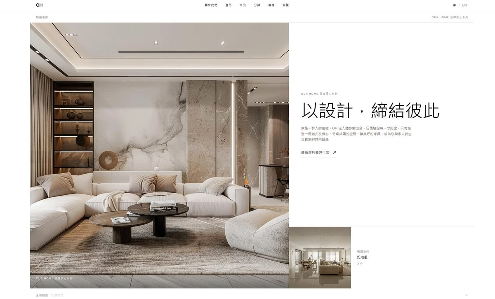
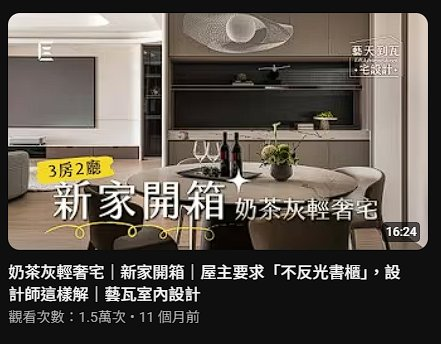
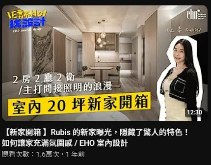
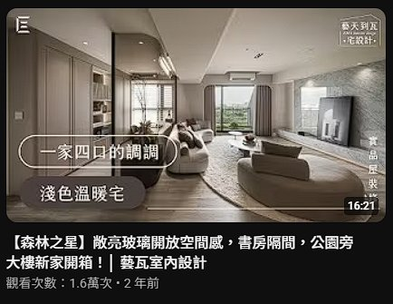
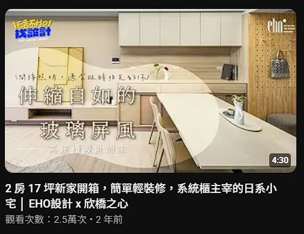

我是楊旻瑾，東海中文系畢業。
我從前經營過社群，也就是所謂的社群小編，經手過的粉絲專頁屬性有補習班和室內設計等等。前一份工作主要經營室內設計，後期有接手家具產業。
該工作初期人手不足，大多事情由我處理，因此我會按照一周七天來切分主題，比如週一、週三處理社群，其他日子則安排其他事情。貼文的性質，80% 是圖文、10% 是限動、10% 是短影音。
由於我本身擅長處理文字，因此在經營社群時，比起寫短文，我會更喜歡寫長一點。圖片方面，由於室內設計公司會請攝影師拍攝室內空間照，所以不必太擔心素材，而且由於室內設計的特殊性，多數不須額外處理圖片，僅僅空間就能表達出美感。如果有需要處理，我會以 Canva 做編輯。
隨著短影音崛起，我也會用 CapCut 做短影音剪輯，大多只是簡單剪接畫面，上字幕，確保影片節奏不拖沓。
我經營時的策略，採取的是：
每則動態，我會去追蹤發布之後第 7 天的數據。主要指標為互動率。由於長期經營的發現，我們將互動率高於 3% 的貼文稱之為好貼文，並向這些好貼文學習，然後運用在之後的貼文。
短影音的部分，觀看數是主要指標。在此，我們著重學習觀看數高於 10000 的短影音。
透過累積的文案，可以做到讓 AI 學習文案風格，之後只要交給 AI 不能更動的資料，即可完成一篇文章或文案。不能更動的資料主要是指，坪數、建案名稱、幾房幾廳等不能出錯的資料。
由於多模態的 AI 可以辨識圖片，所以照片中有什麼，它可辨識並說出，配合先前學完的文案風格，一篇貼文的作品介紹（通常會先寫官網的作品介紹，再寫貼文），後期連設計風格都是由 AI 所定調──除非室內設計師明確的說，這是什麼風格。
由於除了室內設計，還有經營家具社群，在這方面，AI 的圖片編輯能力有很大的助力。它讓我們節省將家具（尤其沙發這類大型家具）運送到攝影棚拍攝的成本。
我們透過從廠商拿到的家具圖片（大概三個角度的簡易拍攝照），即可透過 AI 呈現家具的各個角度、細節，以及放到各種不同空間的情境。這讓我們感受到 AI 對電商的助力，可說是前所未有的強大。
前公司的官網是由外部網站公司製作，因此我使用過他們的官網後台。大多功能跟其他間網站公司一樣，都是寫死的。如果後續要新增什麼功能，都需要額外報價請工程師處理。
我在此處的職責大多是維護官網內容，還有注意網站表單的洽詢。
為了分析數據，我會去 GA4 中確認事情是否有往好的方向發展。大多會看每月流量，以及流量中區分而出的自然流量以及付費流量。有時，如果有辦活動，還會注意一下放了 UTM 的流量。
前公司的官網本就為了 SEO 而打造，因此我還有一個重心是經營官網的 SEO。方法相當純樸，每個月新增 8 篇左右的 SEO 文章。大多文章為單篇，但偶爾我們會推出系列文章，並將它們匯集到一個總覽頁面，這類系列文章經我們測試，效果優於單篇。
我挑選關鍵字的方法，會先看這個關鍵字有沒有流量，以及搜尋這個關鍵字的人，心裡在想些什麼。如果只是單純想找資訊，那對我來說優先度會比較低，因為會缺乏購買的動機。
撰寫 SEO 文章時，基本會遵從 Google 提倡的 EEAT 原則，並以正確的 H1、H2、H3 做架構，目前撰寫時，每一段都力求能單獨看懂，也就是不依賴上下文的連貫，才能看懂。主因是因為 AI 喜歡引用這類型的段落。
由於 SEO 文章的需求量大，我也有外包給外部寫手，並負責審核他們的稿件。字數限制在一千字左右。
後來由於要發展家具產業，所以我使用 Cloudways 搭配 WordPress 架設了一個家具購物網站，金流的部分使用 WooCommerce 搭配綠界。雖然是電商網站，但我也有安排 SEO 文章上架，使得月流量快速穩定在 400 左右。
另外，為了進口家具，前老闆也開設了一個跟貿易相關的公司。這次我沒有使用 WordPress，而是嘗試使用 AI 架站。
該網站採前後端分離的方式架構，使用詢價車方式服務客戶（不公開價格），有中英文雙語切換功能，後端使用 Sanity 當官網後台，因此只要設置網站管理員就能持續進行官網的內容維護，而不用事事麻煩工程師，符合市面上常見的網站後台需求。
整個官網的文案內容則由我負責，不論是品牌故事，或者商品頁文案。

前公司的廣告會導流到官網，因此我也會負責廣告轉換頁的撰寫。由於官網的文字編輯器受限，僅能使用 HTML + CSS，因此無法做出太動態的頁面。
我大多遵循轉換動作只需要一個的原則，如果轉換動作是填寫表單，那就只會有一個行動呼籲，那就是點擊以填寫表單。
我操作過的廣告有 Google 和 Meta。
Google 廣告方面，我經常投放關鍵字廣告，主要投放的關鍵字有品牌字（公司的名字或產品名）、建案名稱以及室內設計相關的關鍵字。
在優化廣告方面，我主要是透過觀看競爭指標來做調整，尤其是廣告為何曝光流失的指標，是預算不足，還是排名不夠好。
在調整廣告時，原則上最多上調或下調 20%，以避免廣告重新學習。
偶爾沒有靈感時，我會投放動態廣告，讓他抓官網的內容來自己生成廣告。然後再看搜尋字詞，來看看人們都搜些什麼來找到官網。
Meta 部分，我大多投放輪播或單篇廣告。在這邊投放的目的，不像 Google 是為了立即轉換，這邊更傾向曝光品牌，接觸那些從未認識過我們的人。
在受眾方面除了會抓室內設計相關，也會根據高收入的興趣來抓受眾（因為前公司專做高單價的室內設計）。
在家具產業投入初期，我透過 Meta 嘗試尋找對沙發有興趣的人。以下面這條流程，來打造一個簡陋的商業模式：
當時一個客人填寫表單的 CPA，大約是沙發單價的 1/20。不過業務後續沒有回報數據給我，所以我也不確定購買的轉換 CPA 為多少。
我也經營過 YouTube 頻道，在前公司規劃了新家開箱系列影片，從影片腳本撰寫到現場監督都由我執行完成，除了在現場會跟攝影師溝通影片呈現的樣貌，也需要回饋影片剪輯的意見，以確保影片是我想要的節奏。
拍這系列影片的目的是為了讓客人安心，證實室內設計的完成度確實值得花錢購買，因為室內設計的蟑螂仍然無所不在。




四支代表作合計逾 7 萬次觀看 · 看整個頻道 →
我後來成為了行銷部的主管。負責管理、制定獎金制度與 KPI，並定期審查工作完成度。
我開始負責行銷部的人力擴編，面試時主要考核所掌握的技能知識，以及價值觀是否符合公司文化。
我會先列出所有面試問題並分類，然後逐一詢問，如果面試者有特別讓我感興趣，才會詢問其他不在清單中的問題。
後來，行銷部逐步擴大，我把工作交付出去，形成了一個分工較以前明確的行銷部門。